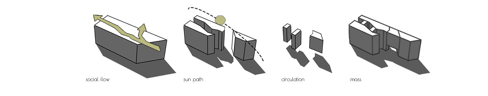
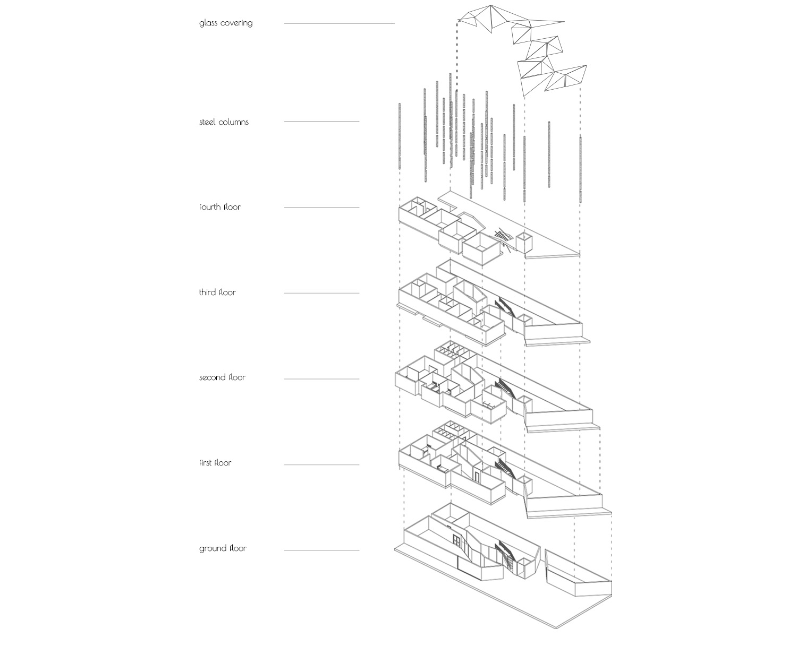
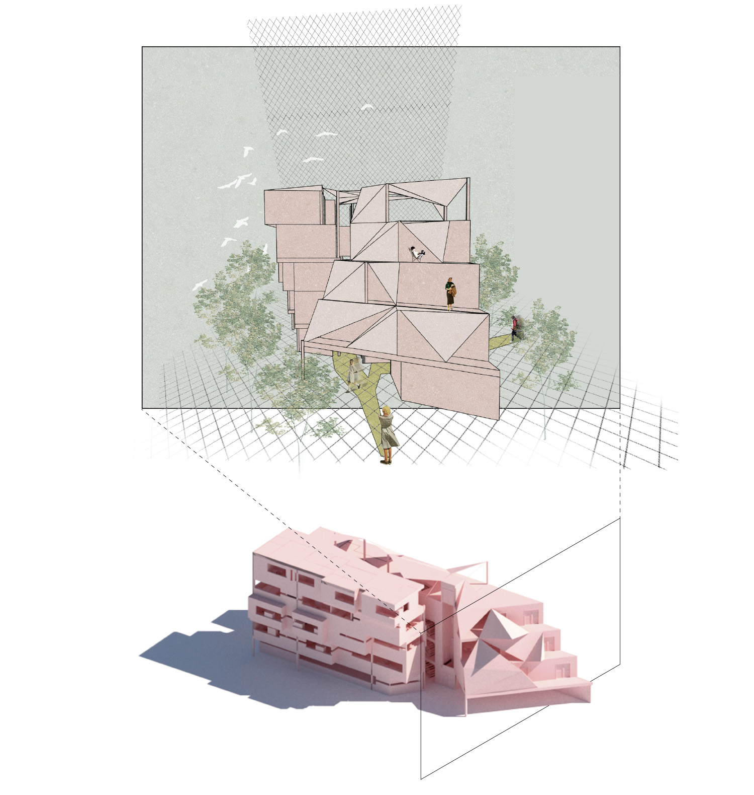
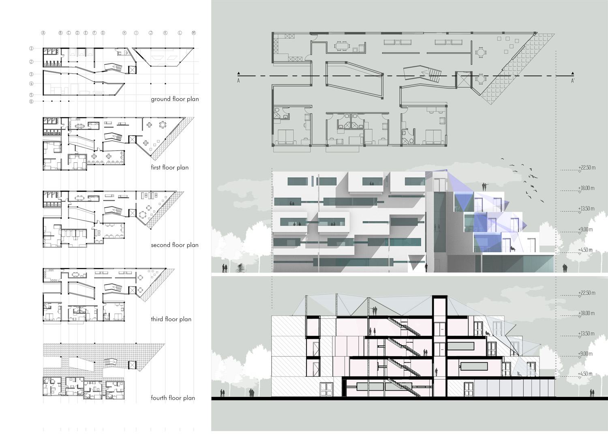
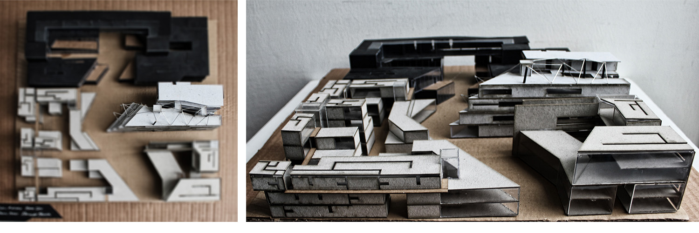

Crack
| _university | METU, Turkey |
| _semester | BSc in Architecture, 2nd year design studio |
| _year | 2016 |
| _location | Kazıkiçi Bostanları, Ankara, Turkey |
| _author(s) | Orçun Yazıcı |
Introducing the idea of 'crack' to a smaller scale provides masses and voids that creates dynamic and efficient sun light. It also affects circulation and the feelings. Linear opening which is located in the middle part of the building, acts as a courtyard and gives the feeling of flowing glass facade thorugh getting narrower and wider. The material is giving reference to scenario of glass and ceramic atelier in a complementary way.



